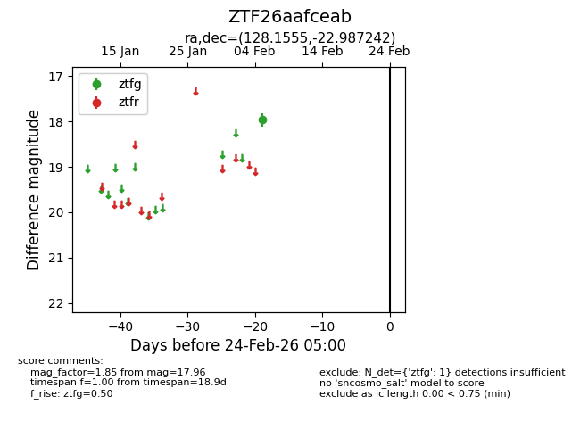
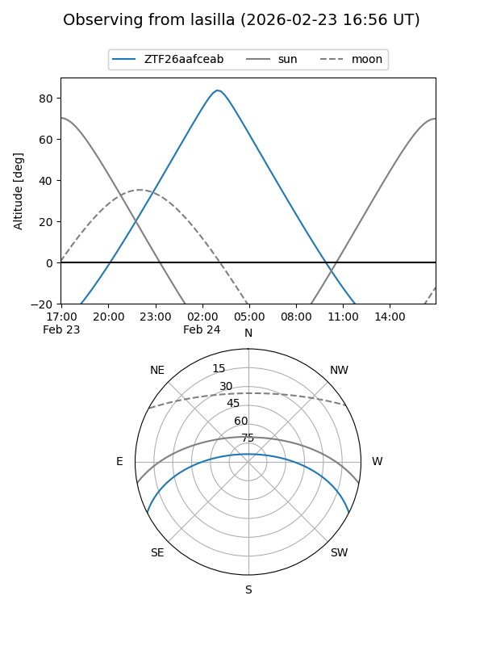
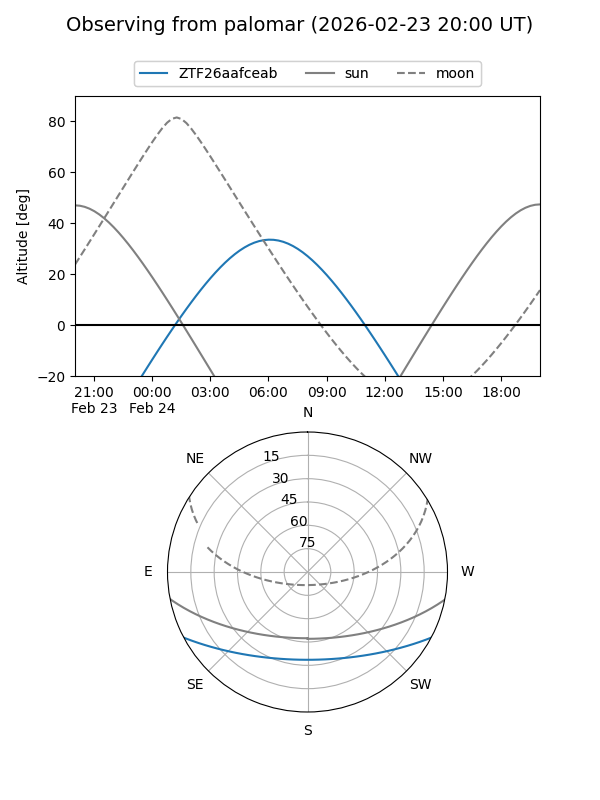

ZTF26aafceab
Target ZTF26aafceab at 2026-02-24 09:08
Aliases and brokers:
FINK: link
Lasair: link
ALeRCE: link
alt names
ZTF26aafceab (ztf,fink_ztf)
Coordinates:
equatorial (ra, dec) = 128.1555,-22.98724
equatorial (HMS+DMS) = 08:32:37.31,-22:59:14.07
galactic (l, b) = (245.2693,+9.90502)
Flags:
Photometry:
last ztfg=17.96
1 ztfg detections
Lightcurve

Visibility


Additional plots